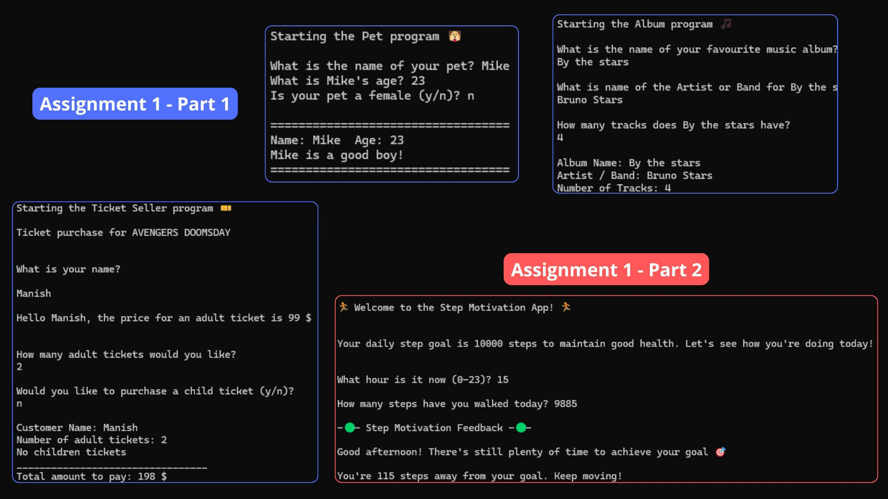
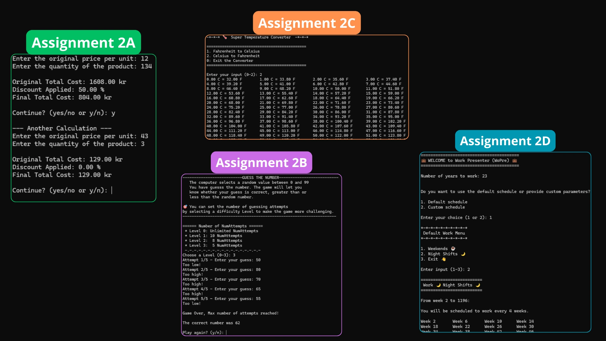
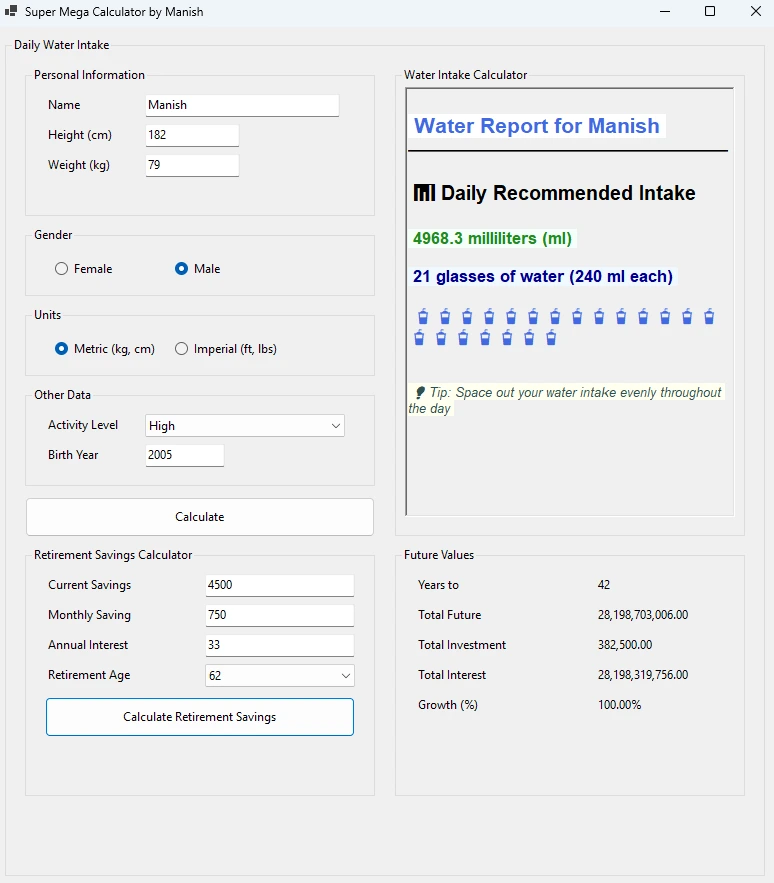
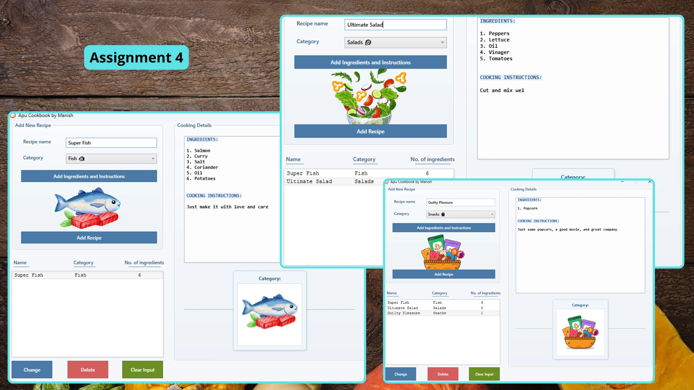
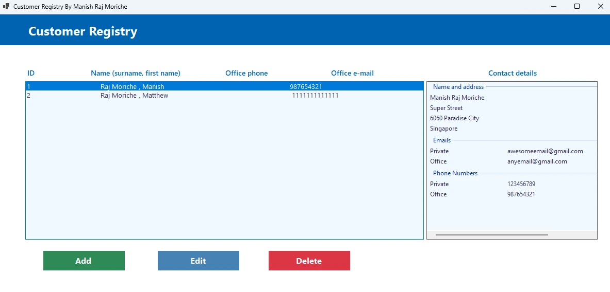
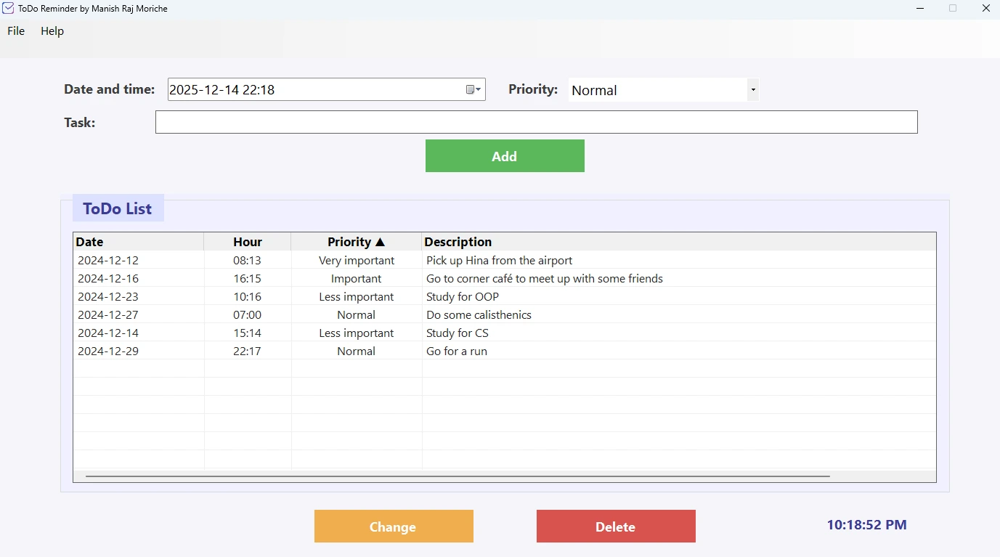

This repository contains the coursework for the C# Programming course (7.5 ECTS) at Malmö University (VT25). I completed all 6 assignments and achieved the highest grade (Grade A).
The course covers the fundamentals of C# and .NET development, progressing from basic console applications to complex GUI applications using Windows Forms and WPF.
All technical information on how to open and run the projects is specified in their respective README files in the GitHub repository.
Assignment Overview
Assignment 1 - Basic C# Concepts
An introduction to Object-Oriented Programming in C#. This assignment involves creating basic classes like Album, Pet, and TicketSeller, along with a simple console application to track steps.

Assignment 2 - Console Applications & Logic
A collection of console-based tools demonstrating control structures and logic. It includes a Cost Calculator, a Guess The Number game, string manipulation utilities, and a basic Scheduler.

Assignment 3 - Calculators (Windows Forms)
Transitioning to GUI development with Windows Forms. This assignment features two practical tools: a Retirement Savings Calculator and a Water Intake Calculator to track daily hydration.

Assignment 4 - Recipe Manager (WPF)
A WPF (Windows Presentation Foundation) application designed to manage recipes. It handles ingredients, recipe details, and utilizes a manager class to organize the data effectively.

Assignment 5 - Contact Management System
A comprehensive Windows Forms application for managing a customer registry. It implements Customer and Contact classes, allowing users to add, edit, and view contact information in a structured list.

Assignment 6 - Task Manager
The final project is a robust To-Do List Application built with Windows Forms. It features task prioritization, a task manager logic for handling operations, and file management to save and load tasks.

For full source code and implementation details, please visit the GitHub repository linked above.